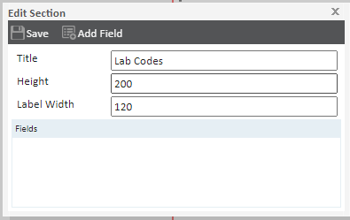
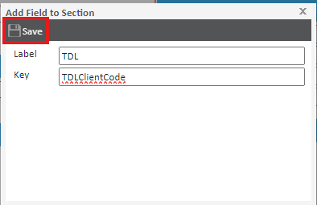
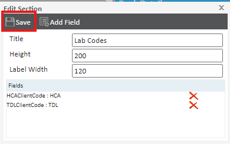
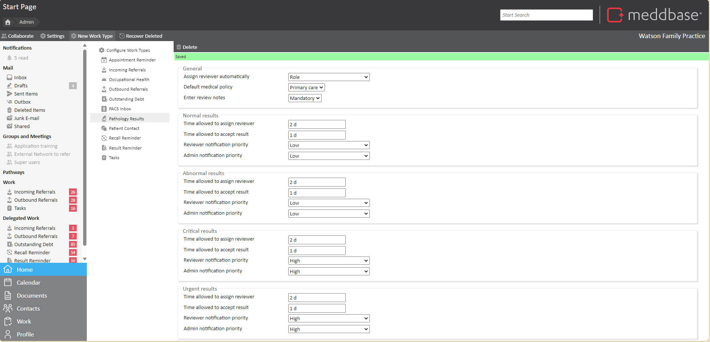
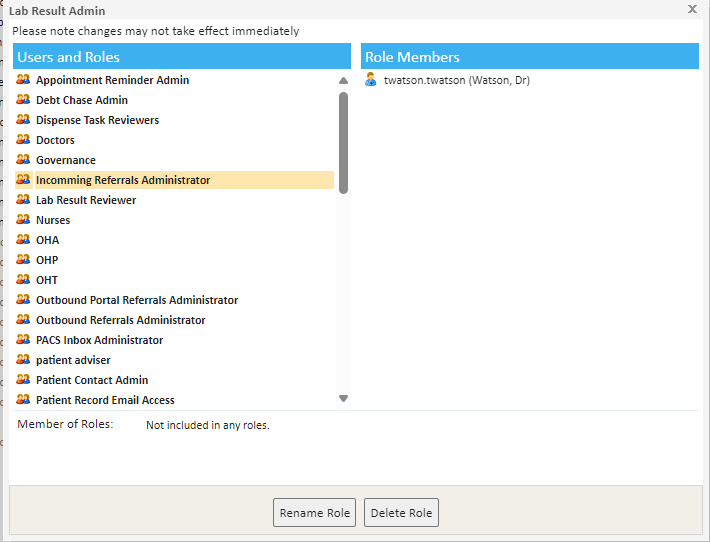
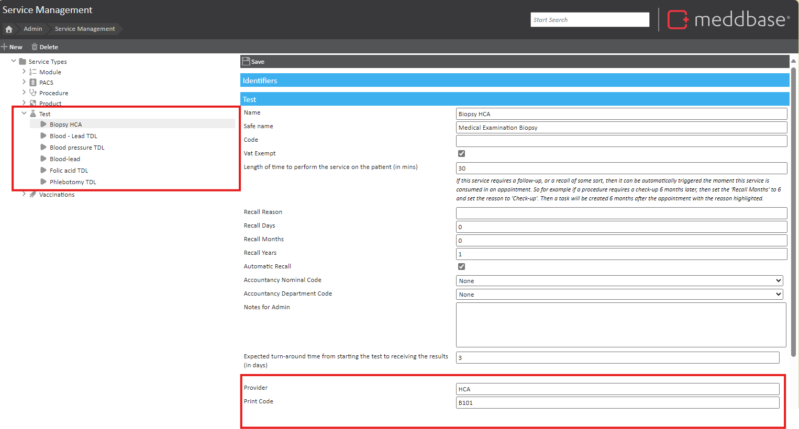

Meddbase comes with a fully integrated electronic pathology system that links directly with selected pathology labs, including HCA (Hospital Corporation of America) and TDL (The Doctors Lab).
Request forms can be raised ad-hoc or during an appointment. If the appointment specifies tests (e.g. a health assessment may require a profile blood test) the lab form will pre-populate with required tests based on how you have configured the service.
Non-standard tests can be ordered and added to the list via the Meddbase service picker. The request form is automatically created from a template and contains all the patient information required, including a unique barcode that ensures complete accuracy when processing the tests.
When tests are completed, the lab automatically sends results back to Meddbase servers. Test results directly update the patient's medical record and your admin team or the requesting doctor are automatically notified in the system or via email.
The article aims to give you a guide to the setup and use of the Pathology feature within Meddbase. Tis article is split into the following sections:
This article assumes that you, the client, has already engaged TDL or HCA, signed up, and obtained a unique Client Code.
For support with how to request and manage pathology in your chamber, please refer to How to request and manage Pathology Results
Your TDL or HCA client code will need to be added to the individual clinicians or the client's Chamber Company Profile. Lab codes are used to identify clients to their providers. For example, for a client called The Meddbase Clinic, their client code might be MeddbaseClinic.
Meddbase looks first for the lab code of the requesting doctor, then for the lab code of the company. If your client uses different lab codes for different requesting doctors, then each code will need to be added to the requesting doctor's record.
If you're doing this for the first time, you'll need to create a custom section in the company and clinician's record.
To do this, navigate to Find Company> Your chamber Company > Company Details > Layout > Unlock Layout for Editing > Add New Section.
You can then edit the new section and add a new field to the section by clicking:

| Label | Key |
| TDL | TDLClientCode |
| HCA | HCAClientCode |


The same steps explained above will apply to the clinician demographics page, where the TDL/HCA code for that clinician needs to be specified.
Work type settings dictate how incoming pathology results are received by your chamber. If you're setting up pathology for the first time, you'll need to add a pathology result work type. To do this, go to Admin >Work >Configure work types >Pathology Results.
From here, you can configure the following:

You must belong to the Lab Result Admin role group to see pathology results as work items. To do this navigate to Admin > User Management > Lab Result Admin role group and add the relevant users.

If you need to add review notes, make sure you belong to the Result Reviewer group. That group will be created once you change the setting in Admin > Work > Pathology Results to assign lab result to a role.
To use the HCA Labs integration, or TDL tests not listed in our predefined pricelist, you will need to create these Tests as a Service. This can be set up manually or via an import. For information on how to create services, please refer to How To Create Services.
When creating Tests in Service Management, it is important these two things are provided accurately:
When importing services in bulk, note that the Turnaround column is mandatory. However, this does not affect functionality, so you can set it to 0.

If you have the TDL integration, you will automatically have TDL tests defined for you. These are provided to us from TDL directly and sit within billing rules. For any TDL tests that are not listed in the Predefined pricelist, you will need to create the test in Service Management and include the appropriate Print Code provided by TDL.